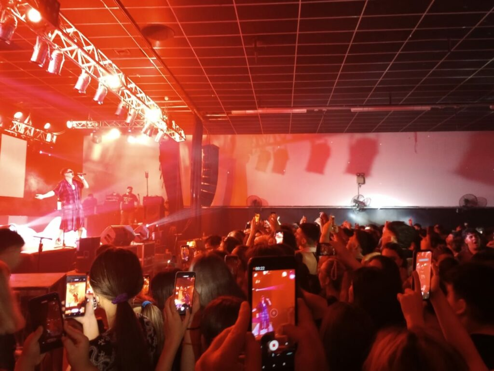

Apertura del Primer Local
En 2010, comenzamos nuestra aventura como un pequeño restaurante en el centro de la ciudad. La idea nació de dos amigos apasionados por la cocina que querían ofrecer algo diferente: hamburguesas artesanales hechas con ingredientes frescos y locales. Nuestro primer local se convirtió en un lugar de encuentro para jóvenes que buscaban algo más que una comida rápida.
Artistas Urbanos Empiezan a Visitarnos
En 2015, artistas de la escena urbana comenzaron a frecuentar nuestro local. Músicos locales venían después de sus conciertos para disfrutar de nuestras hamburguesas. Poco a poco, nos convertimos en un espacio donde la música y la comida se fusionaban, y los artistas podían conectarse con su público en un entorno relajado.
Primer Evento de Música en Vivo
En 2017 organizamos nuestro primer evento de música en vivo, atrayendo a una multitud de fans y artistas. Desde entonces, realizamos eventos semanales donde los artistas urbanos presentan sus nuevos temas mientras nuestros clientes disfrutan de una experiencia sensorial completa.
Apertura de la Segunda Sucursal
Para 2019, abrimos una segunda sucursal en un barrio emblemático de la ciudad. Esta nueva ubicación no solo nos permitió llegar a más personas, sino que también nos consolidó como un lugar icónico para la cultura urbana, con decoraciones inspiradas en el arte callejero.
Colaboración con Artistas Famosos
En 2021 colaboramos con artistas famosos de la escena urbana, invitándolos a crear su propia hamburguesa personalizada. Cada hamburguesa reflejaba la personalidad del artista, atrayendo a sus fans y fortaleciendo nuestra relación con la comunidad artística.